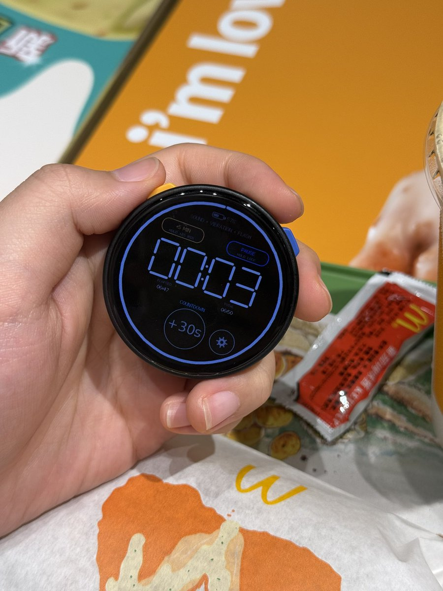
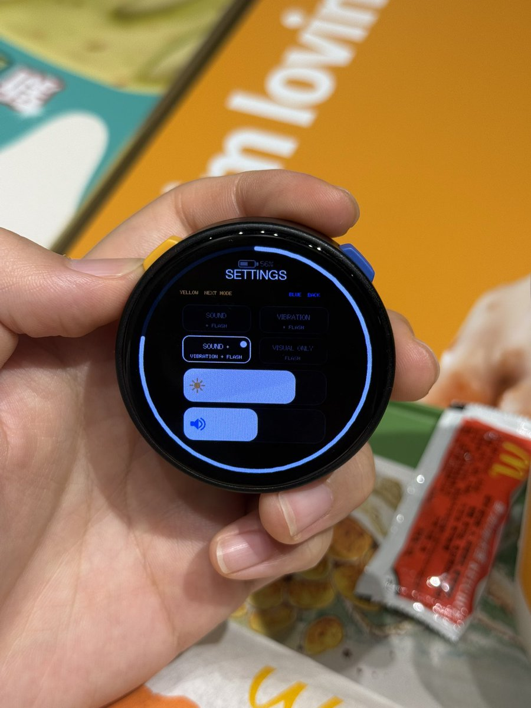
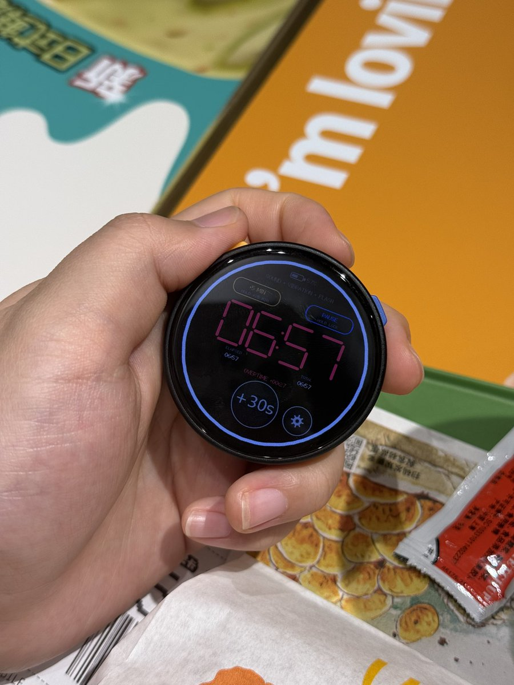

Catherina（赛博咬人黑猫）
@CatherinaMeow
@RizumuA3 m5stack家的小硬件都挺有意思的
我最近在用stick s3接openclaw 想做成随身命令方块



绚香音 Rizumu
@RizumuA3
M5Stack 这个圆形屏幕的 StopWatch 用来做计时器很不错。所以移植重制了一个新的之前在 Cardputer 上写过的专注计时器。
我的设计就是非常适合容易分心和没有时间流逝观念的 ADHD 用来预估时间和进行分心提醒。但是不适合用于精确计时。
类似于那种按键式微波炉的设计。按下会加 5分钟或者 https://t.co/jDzFH4CouJ